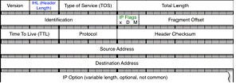
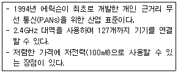
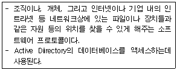
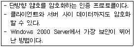

네트워크관리사-1급 (2010-05-09 기출문제)
1과목: TCP/IP
1. IP 헤더 필드들 중 처리량, 전달 지연, 신뢰성, 우선순위 등을 지정해 주는 것은?

- IHL(IP Header Length)
- TOS(Type of Service)
- TTL(Time To Live)
- Header Checksum
(정답률: 알수없음)

2. 아래 내용이 설명하는 기술은?

- IEEE 1394
- IEEE 802.11x
- HomeRF
- Bluetooth
(정답률: 70%)
3. SNMP에 대한 설명 중 올바른 것은?
- TCP/IP 프로토콜의 IP에서 접속 없이 데이터의 전송을 수행하는 기능을 규정한다.
- 시작지 호스트에서 여러 목적지 호스트로 데이터를 전송할 때 사용된다.
- IP에서의 오류(Error)제어를 위하여 사용되며, 시작지 호스트의 라우팅 실패를 보고한다.
- 네트워크의 장비로부터 데이터를 수집하여 네트워크의 관리를 지원하고 성능을 향상시킨다.
(정답률: 70%)
4. OSI 7 계층 모델을 기초로 한 TCP/IP 프로토콜에 대한 설명 중 옳지 않은 것은?
- DataLink Layer : OS의 네트워크 카드의 디바이스 드라이버 등과 같은 하드웨어와 관련된 모든 것을 해결한다.
- Network Layer : 네트워크상의 패킷의 이동과 관련된 일을 하는데, IP가 이에 포함된다.
- Transport Layer : 상위의 계층에서 볼 때 두 개의 호스트간의 자료의 흐름을 가능하게 하는데 TCP와 UDP가 이에 포함된다.
- Presentation Layer : 코드 체계가 다른 컴퓨터간의 코드 변환이나, 데이터 압축 등의 역할을 담당한다.
(정답률: 알수없음)
5. IP Address가 "165.132.10.21"일 때 해당 Class와 사설 IP 대역을 바르게 짝지은 것은? (단, 서브넷 마스크는 Class에 맞는 기본 서브넷 마스크를 사용한다.)
- B Class , 사설 IP 대역 : 172.16.0.0 ~ 172.31.255.255
- B Class , 사설 IP 대역 : 162.32.0.0 ~ 162.192.255.255
- A Class , 사설 IP 대역 : 10.0.0.0 ~ 10.255.255.255
- C Class , 사설 IP 대역 : 192.168.0.0 ~ 192.168.255.255
(정답률: 50%)
6. SMTP 명령어에 대한 설명 중 옳지 않은 것은?
- RCPT : 우편 데이터의 개별적인 수신자를 식별한다.
- RSET : 현재 메일 처리를 중지하고 모든 저장된 정보를 폐기한다.
- SOML : 사용자의 로그인 여부와 상관없이 메시지를 전송한다.
- EXPN : 수신자 SMTP에게 메일링 리스트를 식별하는 논술을 확인하고 리스트의 멤버십을 리턴 할 것을 요구한다.
(정답률: 알수없음)
7. TCP에 대한 설명 중 올바른 것은?
- IP는 데이터의 배달을 관장하고, TCP는 데이터 패킷을 추적 관리한다.
- 비연결 지향형 프로토콜이다.
- OSI 7 계층 모델에서 Session 계층에 속한다.
- 데이터 전송에 있어 신뢰성을 제공하지 않는다.
(정답률: 100%)
8. DNS에 대한 설명 중 올바른 것은?
- 인터넷의 도메인 이름과 같은 형식으로 IP Address에 대한 이름을 지정한다.
- 네트워크의 구성원에 패킷을 보내기 위한 하드웨어 주소를 정한다.
- TCP/IP 프로토콜의 IP에서 접속 없이 데이터의 전송을 수행하는 기능을 규정한다.
- IP 주소를 중앙에서 관리 할 수 있도록, 클라이언트에게 IP 주소와 서브넷 마스크 같은 정보를 동적으로 할당 한다.
(정답률: 알수없음)
9. 네트워크 ID “210.182.73.0”을 몇 개의 서브넷으로 나누고, 각 서브넷은 적어도 40개 이상의 Host ID를 필요로 한다. 적절한 서브넷 마스크 값은?
- 255.255.255.192
- 255.255.255.224
- 255.255.255.240
- 255.255.255.248
(정답률: 50%)
10. 인터넷에서 사용되는 프로토콜에 대한 설명 중 올바른 것은?
- FTP : 인터넷을 통해 파일을 송/수신하기 위한 프로토콜
- SMTP : FTP에 있는 파일들을 검색할 수 있는 서비스
- HTTP : 원격접속을 하기 위한 프로토콜
- Telnet : 하이퍼텍스트 문서를 전송하기 위한 프로토콜
(정답률: 75%)
11. Multicast용으로 사용되는 IP Address는?
- 163.152.71.86
- 128.134.2.51
- 213.122.1.45
- 231.159.61.29
(정답률: 알수없음)
12. ICMP의 메세지 유형으로 옳지 않은 것은?
- Destination Unreachable
- Time Exceeded
- Echo Reply
- Echo Research
(정답률: 73%)
13. IPv6에서 사용되는 전송 방식이 아닌 것은?
- Anycast
- Unicast
- Multicast
- Broadcast
(정답률: 84%)
14. ARP에 대한 설명 중 올바른 것은?
- TCP/IP 프로토콜에서 데이터의 전송 서비스를 규정한다.
- TCP/IP 프로토콜의 IP에서 접속 없이 데이터의 전송을 수행하는 기능을 규정한다.
- 네트워크의 구성원에 패킷을 보내기 위하여 IP Address를 하드웨어 주소로 변경한다.
- 인터넷상에서 전자우편(E-Mail)의 전송을 규정한다.
(정답률: 알수없음)
15. TCP 헤더의 설명으로 올바른 것은?
- RST 플래그 : 데이터가 제대로 전송된 것을 알려준다.
- Window Size : 현재 상태의 최대 버퍼 크기를 말한다.
- Reserved : 수신된 Sequence Number에 대하여 예상된 다음 옥텟을 명시한다.
- FIN 플래그 : 3-Way handshaking 과정을 제의하는 플래그이다.
(정답률: 77%)
16. UDP 헤더 포맷에 대한 설명으로 옳지 않은 것은?
- Source Port : 데이터를 보내는 송신측의 응용 프로세스를 식별하기 위한 포트 번호이다.
- Destination Port : 데이터를 받는 수신측의 응용 프로세스를 식별하기 위한 포트 번호이다.
- Length : 데이터 길이를 제외한 헤더 길이이다.
- Checksum : 전송 중에 세그먼트가 손상되지 않았음을 확인 할 수 있다.
(정답률: 60%)
2과목: 네트워크 일반
17. 아래 프로토콜 중 TCP/IP 계층 모델로 보았을 때, 나머지와 다른 계층에서 동작하는 것은?
- IP
- ARP
- RARP
- UDP
(정답률: 67%)
18. 미국 국방성에서 개발한 세계 최초의 패킷교환망은?
- SNA
- ARPANET
- ALOHA
- Ethernet
(정답률: 75%)
19. CRC(Cyclic Redundancy Checking) 에러검출 방법에 대한 설명으로 옳지 않은 것은?
- 프레임이 수신되면 수신기는 같은 제수(Generator)를 사용하여 나눗셈의 나머지를 검사한다.
- CRC 비트를 만들기 위해 논리합 연산을 수행한다.
- 전체 블록 검사를 위해 메시지는 하나의 긴 이진수로 간주한다.
- 메시지를 특정한 이진 소수에 의해 나눈 후 나머지를 송신 프레임에 첨부하여 전송한다.
(정답률: 알수없음)
20. 데이터가 1인 경우에는 펄스주기의 처음 50%는 (+)전압으로 표시하고 나머지 50%는 Zero 전압으로 나타낸 방식은?
- 단류 RZ방식
- 복류 NRZ방식
- 맨체스터
- 차분맨체스터
(정답률: 28%)
21. 신호파의 크기에 비례하여 반송파의 진폭을 변화시킴으로서 정보가 반송파에 합성되는 방식은?
- FM
- AM
- PM
- PCM
(정답률: 40%)
22. OSI 7 계층 모델의 3계층 네트워크 기능인 경로설정과 스위칭을 수행하는 것은?
- 라우터
- 브리지
- 리피터
- 게이트웨이
(정답률: 80%)
23. 네트워크를 관리하는 서버 없이 컴퓨터들이 동등하게 연결되는 방식은?
- 호스트-터미널 방식
- 피어-투-피어 방식
- 서버-클라이언트 방식
- 호스트-호스트 방식
(정답률: 92%)
24. Fast Ethernet의 주요 토폴로지로 사용되는 방식은?
- BUS
- STAR
- CASCADE
- TRI
(정답률: 알수없음)
25. 4선 방식의 전화선을 사용하여 160Kbps ~ 2.048Mbps의 대칭형 전송속도를 제공해 주는 xDSL 서비스로 올바른 것은?
- HDSL(High Bit Rate Digital Subscribe Line)
- SDSL(Single Line Digital Subscribe Line)
- VDSL(Very High Bit Rate Digital Subscribe Line)
- RADSL(Rate Adaptive Digital Subscribe Line)
(정답률: 25%)
26. ANSI의 네트워크 규격 중 두 개의 링이 토큰 패싱(Token Passing)방식을 채택하고 있는 LAN으로 100Mbps의 전송 속도를 나타내며, 기간망으로 주로 사용됐던 것은?
- Ethernet
- FDDI
- ATM
- Localtalk
(정답률: 62%)
27. 무선 랜의 구성 방식 중 무선 랜카드를 가진 컴퓨터간의 네트워크를 구성하여 작동하는 방식은?
- Infrastructure 방식
- AD Hoc 방식
- AP 방식
- CDMA 방식
(정답률: 알수없음)
3과목: NOS
28. Windows 2000 Server에서 지원하는 NTFS 파일시스템에 대한 설명으로 옳지 않은 것은?
- 폴더나 파일에 대한 개별적인 허가가 가능하다.
- 파일의 압축 저장과 실시간 복구를 지원한다.
- Convert.exe 명령을 사용하면 FAT에서 NTFS로, NTFS에서 FAT으로의 상호 변환이 가능하다.
- 대용량의 저장 미디어에 적합하다.
(정답률: 73%)
29. Linux에서 RPM에 사용하는 옵션 "--nodeps"의 의미는?
- 어떤 패키지의 의존성을 무시하고 설치하고자 할 때
- 디렉터리를 마치 '/' 처럼 생각하고 설치하고자 할 때
- 패키지를 실제로 설치하지는 않고 충돌이나 의존성 문제가 있는지만 검사 할 때
- 새로운 패키지를 지우고, 구버전의 패키지로 교체 할 때
(정답률: 63%)
30. DNS 레코드 중 IP Address를 도메인 네임으로 역매핑하는 레코드는?
- SOA
- A
- PTR
- CNAME
(정답률: 알수없음)
31. Linux의 “vi” 에디터 명령 모드 작업에 대한 설명 중 올바른 것은?
- 저장하는 방법은 ‘:q’ 라고 하면 된다.
- 저장하지 않고 끝내는 방법은 ‘:wq!’ 이다.
- 문서에 행 번호 붙이기는 ‘:set nu’ 라고 하면 된다.
- 한 줄 삭제 명령은 ‘dw’ 이다.
(정답률: 80%)
32. “www.microsoft.com”이란 사이트의 IP Address를 획득하려고 할 때 Windows 2000 Server에의 “cmd”를 이용한 방법으로 올바른 것은?
- netstat www.microsoft.com
- nslookup www.microsoft.com
- ipconfig www.microsoft.com
- telnet www.microsoft.com
(정답률: 90%)
33. Linux의 명령어에 대한 설명 중 옳지 않은 것은?
- ls : DOS의 cd와 비슷한 명령어로 디렉터리를 변경할 때 사용한다.
- cp : 파일을 다른 이름으로 또는 다른 디렉터리로 복사할 때 사용한다.
- mv : 파일을 다른 파일로 변경 또는 다른 디렉터리로 옮길 때 사용한다.
- rm : 파일을 삭제할 때 사용한다.
(정답률: 알수없음)
34. Windows 2000 Server에서 "C:\Inetpub\ftproot"를 FTP 서버의 기본 디렉터리로 사용하였는데 용량이 부족하여 하드디스크를 증설하면서 추가된 하드디스크의 디렉터리를 "C:\Inetpub\ftproot\data2"로 하고 싶을 때 올바른 방법은?
- 가상 FTP 디렉터리를 사용한다.
- Active Directory를 사용한다.
- 공유 디렉터리를 사용한다.
- 삼바를 사용한다.
(정답률: 70%)
35. Windows 2000 Server에서 사용되는 WINS 서비스에 대한 설명으로 옳지 않은 것은?
- WINS 서버는 WINS 클라이언트의 NetBIOS 컴퓨터 이름을 IP Address로 대응시켜주는 데이터베이스를 유지한다.
- WINS 서비스는 Windows 2000 Server 또는 NT Server에서도 설정가능하다.
- WINS 서버는 유동 IP를 사용할 수 있다.
- Windows 2000 Server에서 지원되는 WINS 클라이언트는 Windows 제품군, OS/2 클라이언트, SAMBA를 이용하는 UNIX 클라이언트 등이 있다.
(정답률: 80%)
36. Windows 2000 Server의 터미널 서비스를 이용할 때 얻어지는 장점으로 옳지 않은 것은?
- 원격지의 컴퓨터를 직접 사용할 수 있다.
- 클라이언트의 작업을 감시 할 수 있다.
- 전체적인 TCO의 감소가 가능하다.
- Windows 2000 Server의 기본 설치 시 포함이 되므로 별도의 설정이 필요 없이 서비스 사용이 가능하다.
(정답률: 47%)
37. SQL 클라이언트 구성요소에 속하며 SQL 문장을 쉽게 입력하고, 얻은 결과를 분석할 수 있는 인터페이스를 가지고 있는 도구는? (단, MS-SQL 2000 기준)
- 서버 네트워크 유틸리티
- 쿼리 분석기
- SQL 서비스 관리자
- SQL 프로필러
(정답률: 알수없음)
38. 아래의 내용에서 설명하는 프로토콜은?

- DHCP
- SNMP
- LDAP
- Kerberos 버전5
(정답률: 62%)
39. Windows 2000 Server의 응용 프로그램으로 네트워크의 트래픽이 지속적으로 증가하고 있을 경우, 비정상적인 트래픽의 원인을 찾기 위해 전송되는 프레임을 캡쳐 하는데 사용되는 툴은?
- 케이블 테스터
- 네트워크 분석기
- 네트워크 모니터
- TDR(Time Domain Reflectometry)
(정답률: 85%)
40. Windows 2000 Server에서 Active Directory의 논리적 구조에 포함되지 않는 것은?
- 도메인
- 트리
- 포리스트
- 그래프
(정답률: 60%)
41. Linux에서 DNS를 설치하기 위한 named.zone 파일의 SOA 레코드에 대한 설명으로 옳지 않은 것은?
- Serial : 타 네임서버가 이 정보를 유지하는 최소 유효기간
- Refresh : Primary 네임서버의 Zone 데이터베이스 수정 여부를 검사하는 주기
- Retry : Secondary 네임 서버에서 Primary 네임서버로 접속이 안 될 때 재시도를 요청하는 주기
- Expire : Primary 네임서버 정보의 신임 기간
(정답률: 73%)
42. Windows 2000 Server 사용 시 라우팅 및 원격 액세스 보안 관리를 위한 4가지 인증 프로토콜이 있다. 다음 설명은 어떤 인증 프로토콜에 대한 것인가?

- PAP
- SPAP
- CHAP
- MS-CHAP
(정답률: 59%)
43. Linux와 다른 이기종의 파일 시스템이나 프린터를 공유하기 위해 설치하는 서버 및 클라이언트 프로그램은?
- 삼바(SAMBA)
- 아파치(Apache)
- 센드메일(Sendmail)
- 바인드(BIND)
(정답률: 알수없음)
44. Linux에서 기본적으로 생성되는 디렉터리로 옳지 않은 것은?
- /etc
- /root
- /grep
- /home
(정답률: 알수없음)
45. Linux에서 adduser -u 550 -g 13 -d /home/test -s /bin/sh -f 40 test 와 같은 옵션을 사용하여 사용자 계정을 추가한 경우 설명이 잘못된 것은?
- 사용자 계정은 test이다.
- 홈 디렉터리로는 /home/test를 사용한다.
- 셸은 본셸을 사용한다.
- 40일마다 패스워드를 변경하도록 설정한다.
(정답률: 75%)
4과목: 네트워크 운용기기
46. RAID에 대한 설명으로 올바른 것은?
- RAID는 여러 개의 디스크로 구성된 디스크 배열을 의미한다.
- RAID는 레벨 0 ~ 4 까지 모두 5개의 규약이 있다.
- ‘레벨 0'은 미러 모드라고 하는데 하나의 데이터를 여러 드라이브에 나누어 저장하는 기술이다.
- 레벨의 의미는 데이터 입출력 속도가 빨라지는 단계에 따라 구분한다.
(정답률: 59%)
47. RIP(Routing Information Protocol)의 동작 설명으로 옳지 않은 것은? (단, 모든 설정 값은 기본 설정 값을 사용한다.)
- 라우팅 테이블은 데이타그램 패킷을 통하여 모든 라우터에 방송된다.
- RIP에서는 최대 Hop를 16으로 제한하므로 16이상의 경우는 도달할 수 없는 네트워크를 의미한다.
- 매 60초 마다 라우팅 정보를 방송한다.
- 만약 180초 이내에 새로운 라우팅 정보가 수신되지 않으면 해당 경로를 이상 상태로 간주한다.
(정답률: 39%)
48. LAN 카드의 MAC Address에 실제로 사용하는 비트 수는?
- 16bit
- 32bit
- 48bit
- 64bit
(정답률: 70%)
49. OSI 7 계층 모델 중 1 계층에서 동작하는 장비로 옳게 나열된 것은?
- Repeater, Bridge
- Repeater, Hub
- Hub, Router
- Bridge, Router
(정답률: 55%)
50. Switching mode중에 “Store and Forward”방식의 설명으로 올바른 것은?
- 전체 프레임을 저장한 후 전송하기 때문에 “Cut-through”보다 중계지연 시간이 길다.
- 전체 프레임이 수신되기를 기다리는 대신에, 수신되는 목적지 주소를 분석하여 해당 송신 포트를 결정하고 송신하는 방식이다.
- 수신 프레임의 64Byte만 읽고서 전송하는 방식이다.
- 복수의 포트에서 어느 한 포트로 프레임이 동시에 전송될 때에는, 한 포트만 프레임을 전송할 수 있어 나머지 포트의 프레임은 버퍼에 저장되거나 폐기된다.
(정답률: 47%)
5과목: 정보보호개론
51. 보안 서비스에 대한 설명 중 내용이 옳지 않은 것은?
- 인증(Authentication) - 사용자의 신분 혹은 객체의 내용 등이 타당성을 확인함
- 무결성(Integrity) - 정보 시스템이나 네트워크 자원에 대한 손실이나 축소를 방지함
- 부인 봉쇄(Non-Repudiation) - 송신자나 수신자가 전송된 메시지를 부인하지 못하도록 함
- 기밀성(Confidentiality) - 허락 되지 않은 사용자 또는 객체가 정보의 내용을 알 수 없도록 하는 것
(정답률: 62%)
52. Windows 2000 Server 시스템에서 로컬 사용자, 그룹 관련 정보를 저장한 데이터베이스는?
- SAM
- Hive
- SRM
- WinLogon
(정답률: 77%)
53. 비밀키 암호화 기법에 대한 설명으로 옳지 않은 것은?
- 두 사람이 똑같은 키를 소유해야 한다.
- 암호화 알고리즘은 간단하고 편리하지만 관리하기가 어렵다.
- 공개키 암호화 방식에 비해 필요한 키의 수가 적으므로, 전자서명에서도 상대적으로 간단하고 효율적인 시스템을 구축하는 것이 가능하다.
- 키는 각 메시지를 암호화하고 복호화 할 수 있도록 전달자에 의해 공유될 수 있다.
(정답률: 80%)
54. Linux 커널에서 기본으로 제공하는 넷필터(Net Filter)를 이용하여 방화벽을 구성할 수 있는 패킷 제어 프로그램은?
- iptables
- nmap
- fcheck
- chkrootkit
(정답률: 60%)
55. 데이터의 전달을 가로막아서 수신자 측으로 정보가 전달되는 것을 방해하는 행위를 나타내는 용어는?
- 가로챔(interception)
- 두절(interruption)
- 변경(modification)
- 위조(fabrication)
(정답률: 73%)
56. DoS(Denial of Service)의 개념으로 옳지 않은 것은?
- 다량의 패킷을 목적지 서버로 전송하여 서비스를 불가능하게 하는 행위
- 로컬 호스트의 프로세스를 과도하게 fork 함으로써 서비스에 장애를 주는 행위
- 서비스 대기 중인 포트에 특정 메시지를 다량으로 보내 서비스를 불가능하게 하는 행위
- Internet Explorer를 사용하여 특정권한을 취득하는 행위
(정답률: 82%)
57. NTFS를 사용하는 Windows 2000 Server와 Windows 98을 사용하는 컴퓨터를 모두 사용하려고 한다. 이때 Windows 2000 Server에서 파일 A를 Windows 98을 사용하는 컴퓨터로 옮겼을 경우 파일 A의 사용권한은?
- 그대로 보존된다.
- 기존의 사용권한에 옮겨진 폴더의 사용권한이 누적된다.
- 이동된 폴더의 사용권한을 가진다.
- 사용권한을 잃게 된다.
(정답률: 43%)
58. 전자우편 보안기술 중 PEM(Privacy-enhanced Electronic Mail)에 대한 설명으로 옳지 않은 것은?
- MIME(Multipurpose Internet Mail Extension)를 확장해서 전자 우편 본체에 대한 암호 처리와 전자 우편에 첨부하는 전자 서명을 제공한다.
- 프라이버시 향상 이메일이라는 뜻으로, 인터넷에서 사용되는 이메일 보안이다.
- 보안 능력이 우수하고, 중앙집중식 인증 체계로 구현된다.
- 비밀성, 메시지 무결성, 사용자 인증, 발신자 부인 방지, 수신자 부인 방지, 메시지 반복 공격 방지 등의 기능을 지원한다.
(정답률: 알수없음)
59. 넷스케이프사에서 전자상거래 등의 보안을 위해 개발한 암호화 프로토콜로, 서버와 클라이언트 간 인증방식으로 RSA 방식과 X.509를 사용하고, 실제 암호화된 정보는 새로운 암호화 소켓채널을 통해 전송하는 방식은?
- S-HTTP(Secure Hypertext Transfer Protocol)
- SET(Secure Electronic Transaction)
- SSL(Secure Sockets Layer)
- SSH(Secure Shell)
(정답률: 70%)
60. 저작권은 저작재산권과 저작인격권으로 나뉠 수 있다. 저작재산권에 해당하지 않는 것은?
- 공표권
- 복제권
- 번역권
- 배포권
(정답률: 67%)